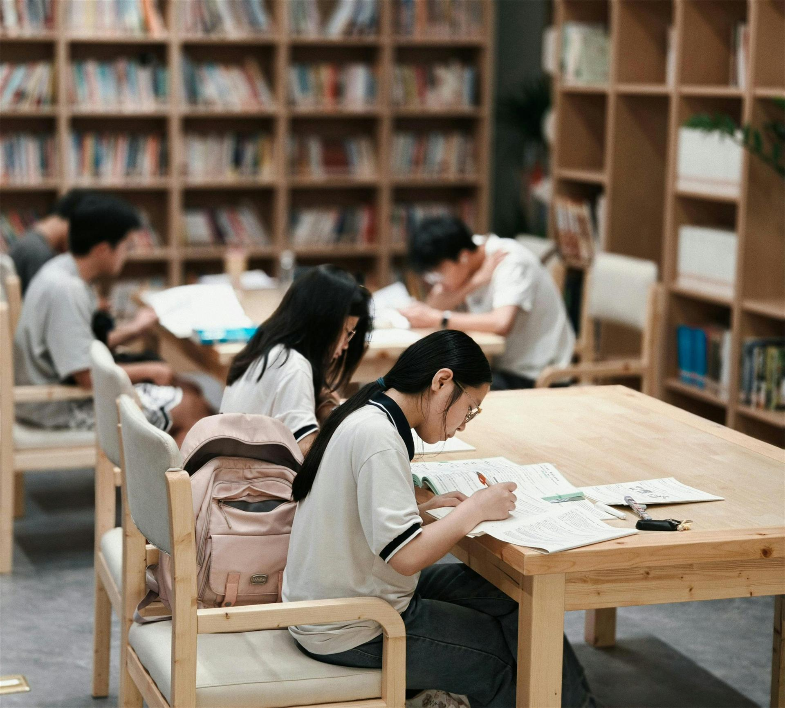
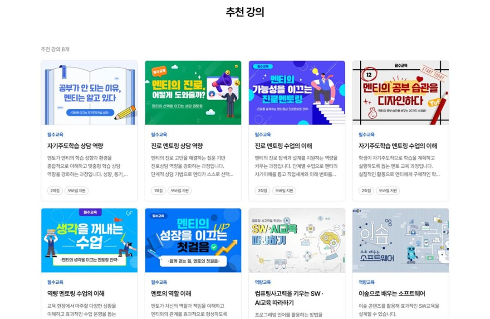
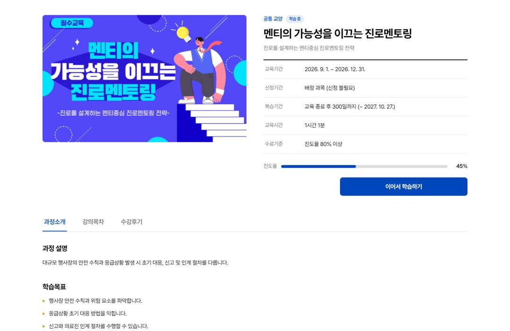
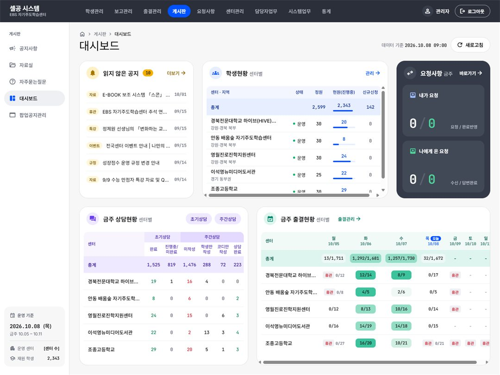
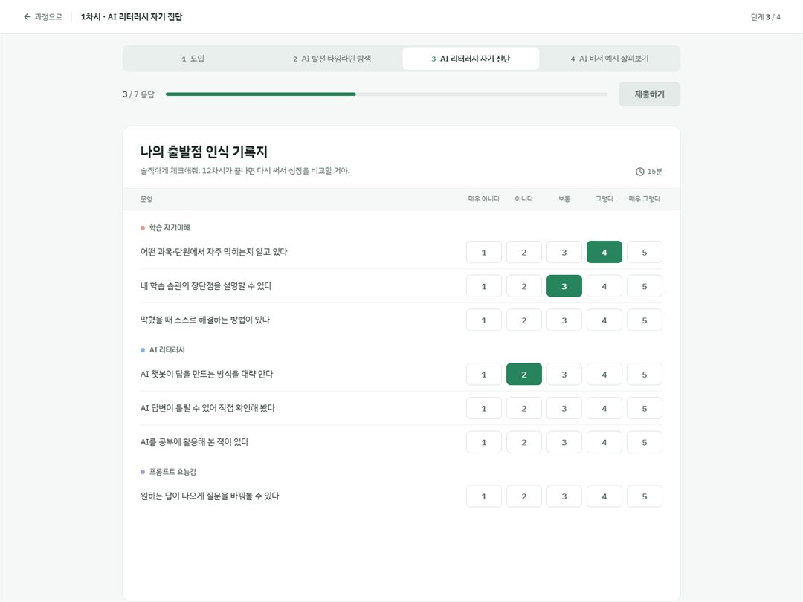
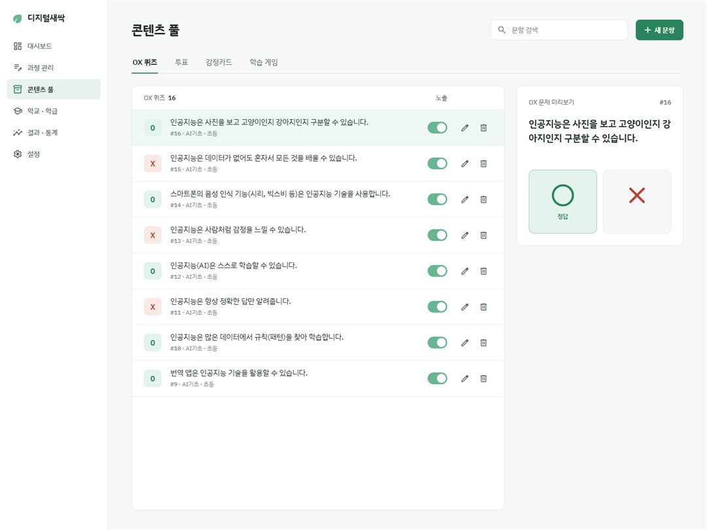
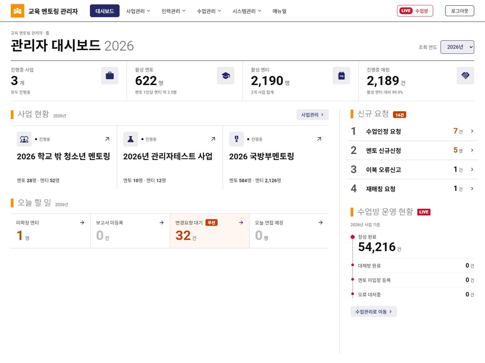
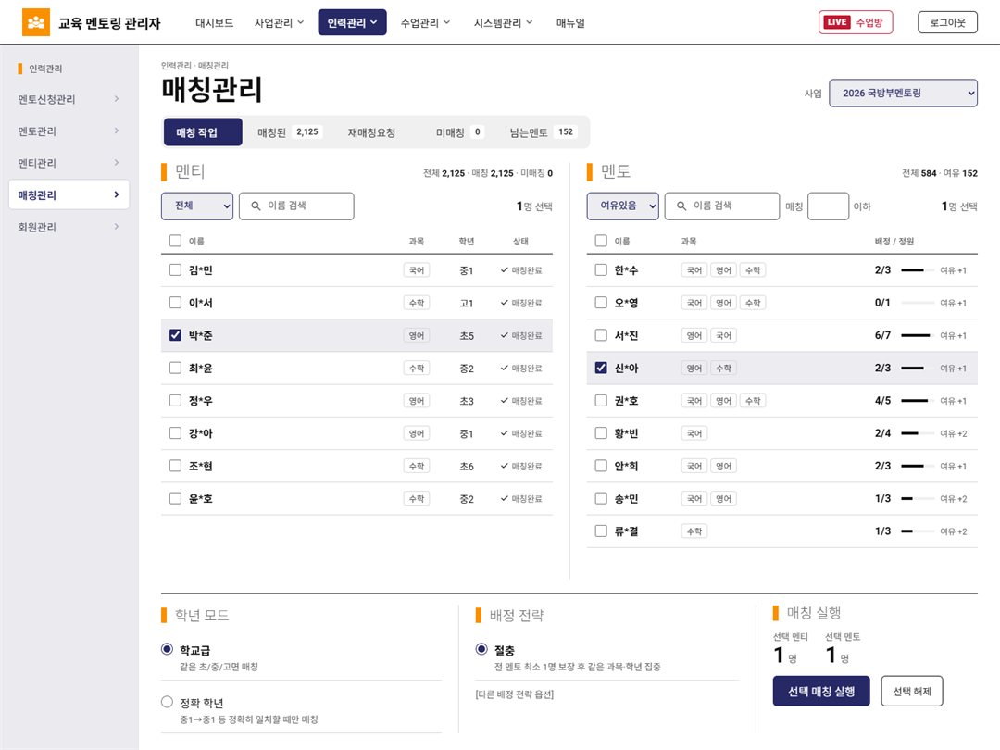

맞춤형 교육 콘텐츠를 개발 및 제공하며,
특화된 프로그램을 통해 교육 혁신을 선도합니다
Learning
Systems
콘텐츠 운영부터 학습 진단, 진도 관리, 성과 분석까지 교육 전 과정을 하나로 지원하는 디지털 학습 플랫폼을 구축합니다.

기관의 교육 목표와 프로그램 특성을 반영하여 기능을 기획하고, 사용자별 흐름을 고려한 UI/UX를 설계합니다.
학습 데이터 기반의 분석 체계를 구축하여 학습 현황을 실시간으로 파악하고, 맞춤형 피드백과 운영 전략 수립이 가능하도록 지원합니다.

다양한 교육 자료와의 연계를 통해 확장성 있는 학습 환경을 제공하며, 사용자 매뉴얼 및 운영 가이드 제작까지 포함한 안정적인 시스템 운영 체계를 구축합니다.
데이터로 관리하고, 상담으로 완성하는 자기주도학습 관리 플랫폼입니다.

셀공 시스템은 자기주도학습센터의 운영 전반을 통합 관리하는 학습 데이터 기반 운영·관리 시스템입니다.
학생의 학습, 상담, 출결, 진단평가까지 모든 과정을 하나로 연결하여 자기주도학습 선순환 구조를 구현합니다.
오름에듀테크의 AI 코스웨어는 학생이 AI를 단순히 사용하는 수준을 넘어, 직접 설계하고 활용하는 경험을 제공하는 프로젝트 기반(PBL) 디지털 학습 솔루션입니다.

학생·강사·관리자가 하나의 플랫폼에서 프로젝트 활동부터 피드백, 운영 관리까지 함께 이어갑니다.

학습 전·중·후 전 과정의 데이터를 기반으로 학습자의 성장과 역량 변화를 체계적으로 기록하며, 생성된 모든 활동은 자동으로 누적되어 개인별 성장 이력과 포트폴리오로 확장됩니다.
멘토링 사업의 운영 전 과정을 하나로 관리하는 시스템으로,
멘토·멘티 매칭부터 활동 기록, 사업별 운영 설정까지 제공합니다.

과목, 가능 시간 등 멘토와 멘티의 조건을 세부적으로 설정하고, 이를 바탕으로 서로에게 꼭 맞는 멘토와 멘티를 매칭합니다.
매 회차가 끝나면 활동보고서를 작성해 멘토링 과정 전체를 체계적으로 기록·관리합니다.

신청 교재, 비용 등 사업마다 다른 운영 조건을 자유롭게 설정할 수 있어, 어떤 멘토링 사업이든 맞춤형으로 배포·운영할 수 있습니다.
또한 AI 챗봇을 통해 요청 사항을 바로 처리할 수 있어 운영 편의성을 높였습니다.